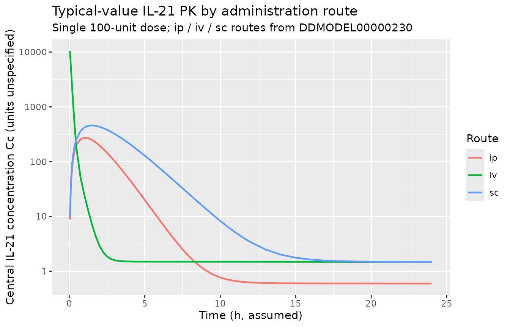
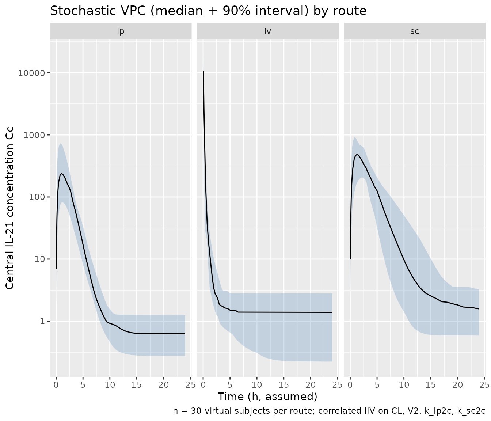
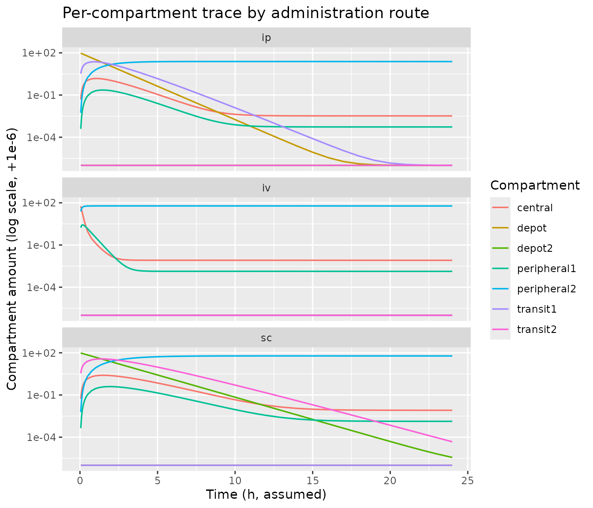

Recombinant murine IL-21 (Elishmereni 2011)
Source:vignettes/articles/Elishmereni_2011_il21.Rmd
Elishmereni_2011_il21.RmdModel and source
- Citation: Elishmereni M, Kheifetz Y, Sondergaard H, Overgaard RV, Agur Z (2011). An integrated disease/pharmacokinetic/pharmacodynamic model suggests improved interleukin-21 regimens validated prospectively for mouse solid cancers. PLoS Computational Biology 7(9):e1002206. doi:10.1371/journal.pcbi.1002206. DDMORE Foundation Model Repository: DDMODEL00000230 (simplified Monolix 3.2 re-fit; one compartment removed and parameters re-estimated by mixed-effects, per Model_Accommodations.txt).
- Description: Preclinical (mouse). Seven-compartment population PK model for recombinant murine interleukin-21 (rIL-21) administered by intraperitoneal (ip), intravenous (iv), or subcutaneous (sc) routes, extracted from the DDMORE Foundation Model Repository (DDMODEL00000230). Linear elimination from the central compartment plus a direct first-pass loss from the ip depot, parallel ip and sc absorption routes each with a single intermediate transit compartment, and two peripheral distribution compartments. Saturable transfer terms present in the published model (sa0, sa1, sa2) and the sc-depot direct elimination rate (k30) are held at zero in the DDMORE deposit, leaving an effectively linear system. Per-subject random effects on CL, central volume, and the ip and sc absorption rates are correlated as a 4 x 4 block. Dose route is encoded by the cmt column: ip = depot, iv = central, sc = depot2. Units are not declared in the DDMORE bundle (no IL_21_PK.csv shipped); see the validation vignette Errata.
- Article: https://doi.org/10.1371/journal.pcbi.1002206
- DDMORE Foundation Model Repository entry: DDMODEL00000230
The DDMORE deposit (DDMODEL00000230) is a simplified Monolix 3.2
re-fit of the PK model published in Elishmereni et al. 2011 (PLoS
Computational Biology). Per the deposit’s
Model_Accommodations.txt and RDF metadata
(model-implementation-conforms-to-literature-controlled = "No"),
the Monolix re-fit removed one compartment from the published model and
re-estimated all parameters by a mixed-effects approach (the original
publication used step-wise least-squares fitting). The original
publication PDF was not on disk during this extraction; parameter values
and equations were taken verbatim from the bundle’s
IL_21_PK_model.mdl.
Population
Recombinant murine interleukin-21 (rIL-21) was administered to mice
across three routes: intraperitoneal (ip, cmt = "depot",
source CMT = 1), intravenous (iv, cmt = "central", source
CMT = 2), and subcutaneous (sc, cmt = "depot2", source CMT
= 3). The DDMORE deposit’s RDF description states that the model
encompasses melanoma and renal cell carcinoma settings; the published
Elishmereni 2011 paper used C57BL/6 mice for the in vivo IL-21 PK
experiments. Specific cohort sizes, body weights, and dose levels are
not reproduced in the bundle (the source CSV IL_21_PK.csv
is not shipped). The same metadata is available programmatically:
mod_meta <- readModelDb("Elishmereni_2011_il21")()
str(mod_meta$population, max.level = 1)
#> List of 10
#> $ species : chr "mouse (strain not declared in DDMORE bundle; Elishmereni 2011 used C57BL/6 for the in vivo IL-21 PK experiments)"
#> $ n_subjects : int NA
#> $ n_studies : int NA
#> $ age_range : chr NA
#> $ weight_range : chr NA
#> $ sex_female_pct: num NA
#> $ disease_state : chr "Tumour-bearing and tumour-free mice receiving recombinant murine interleukin-21 (rIL-21) by ip, iv, or sc route"| __truncated__
#> $ dose_range : chr "Multiple administration routes (ip, iv, sc); specific dose levels are not reproduced in the DDMORE bundle (the "| __truncated__
#> $ regions : chr NA
#> $ notes : chr "The DDMORE deposit (DDMODEL00000230) is a simplified Monolix 3.2 re-fit of the original Elishmereni 2011 PK mod"| __truncated__Source trace
The per-parameter origin is recorded as an in-file comment on each
ini() entry in
inst/modeldb/ddmore/Elishmereni_2011_il21.R. The table
below collects them in one place.
| Equation / parameter | Value | Source location |
|---|---|---|
lcl |
log(0.0229) |
IL_21_PK_model.mdl parObj STRUCTURAL
POP_cl = 0.0229
|
lvc |
log(0.00551) |
parObj STRUCTURAL POP_v2 = 0.00551
|
lvp |
log(0.0009) |
parObj STRUCTURAL POP_v4 = 0.0009
|
lvp2 |
log(24.4) |
parObj STRUCTURAL POP_v5 = 24.4
|
lk_ip2c |
log(0.693) |
parObj STRUCTURAL POP_q12 = 0.693
|
lk_sc2c |
log(0.727) |
parObj STRUCTURAL POP_q23 = 0.727
|
lk_c2p1 |
log(0.48) |
parObj STRUCTURAL POP_q24 = 0.48
|
lk_c2p2 |
log(6.38) |
parObj STRUCTURAL POP_q25 = 6.38
|
lk_ipelim |
log(0.4) |
parObj STRUCTURAL POP_k10 = 0.4
|
propSd |
0.00975 |
parObj STRUCTURAL b = 0.00975
|
| IIV correlated block | sd = (0.407, 0.74, 0.235, 0.304); corr off-diagonals (-0.27, 0.10, -0.29, 0.12, -0.28, 0.10) | parObj VARIABILITY
omega_cl/omega_v2/omega_q12/omega_q23 and OMEGA
type is corr
|
| 7-compartment ODE | n/a | mdlObj MODEL_PREDICTION DEQ block (lines 160-168) of
IL_21_PK_model.mdl
|
Observation Cc
|
central / vc |
mdlObj MODEL_PREDICTION output1 = A2 / v2
|
| Residual error form | proportional | mdlObj OBSERVATION
Y = proportionalError(proportional = b, eps = EPS_Y, prediction = output1)
|
The structural-parameter and IIV values use the .mdl
value = ... entries directly; per DDMORE deposit convention
these are the final fitted Monolix 3.2 estimates rather than initial
values. No Output_real_*.lst is shipped with this bundle
(the deposit is a Monolix run, not NONMEM), so the .mdl / PharmML pair
is the only authoritative source for the point estimates.
Virtual cohort
The original IL-21 PK observations are not redistributed with the DDMORE bundle. The figures below use a virtual cohort that exercises each of the three administration routes at a common nominal dose. Body weight is not encoded in the model (no covariates are declared in the .mdl), so the virtual cohort is dose-only.
set.seed(20260515)
n_per_route <- 30
nominal_dose <- 100 # arbitrary mass units per the DDMORE deposit's unspecified dose unit
obs_grid <- c(
seq(0, 0.5, by = 0.05),
seq(0.75, 4, by = 0.25),
seq(4.5, 12, by = 0.5),
seq(13, 24, by = 1)
)
make_route <- function(route_label, route_cmt, n, id_offset) {
rxode2::et(amt = nominal_dose, cmt = route_cmt, time = 0) |>
rxode2::et(obs_grid) |>
rxode2::et(id = seq_len(n) + id_offset) |>
as.data.frame() |>
dplyr::mutate(route = route_label)
}
events <- dplyr::bind_rows(
make_route("ip", "depot", n_per_route, id_offset = 0L),
make_route("iv", "central", n_per_route, id_offset = n_per_route),
make_route("sc", "depot2", n_per_route, id_offset = 2*n_per_route)
)
stopifnot(!anyDuplicated(unique(events[, c("id", "time", "evid")])))
table(events$route, events$evid)
#>
#> 0 1
#> ip 1590 30
#> iv 1590 30
#> sc 1590 30Simulation
mod <- rxode2::rxode2(readModelDb("Elishmereni_2011_il21"))
sim <- rxode2::rxSolve(mod, events = events, keep = "route") |>
as.data.frame() |>
dplyr::filter(time > 0)For deterministic replication (the .mdl’s correlated 4 x 4 IIV block can generate broad spread on the small-volume central concentration), zero out the random effects:
mod_typical <- rxode2::zeroRe(mod)
sim_typical <- rxode2::rxSolve(mod_typical, events = events, keep = "route") |>
as.data.frame() |>
dplyr::filter(time > 0)
#> ℹ omega/sigma items treated as zero: 'etalcl', 'etalvc', 'etalk_ip2c', 'etalk_sc2c'
#> Warning: multi-subject simulation without without 'omega'Concentration-time profiles by administration route
The figure below shows typical-value (no IIV) IL-21 central concentration versus time for the three administration routes following a single 100-unit dose. The iv profile peaks immediately at dose / V2 then drops sharply because of the small central volume (V2 ~= 5.5 mL in the deposit’s units), while ip and sc profiles show delayed absorption peaks at ~1 h.
sim_typical |>
dplyr::filter(id == 1 |
id == n_per_route + 1 |
id == 2 * n_per_route + 1) |>
ggplot(aes(time, Cc, colour = route)) +
geom_line(linewidth = 0.8) +
scale_y_log10() +
labs(x = "Time (h, assumed)",
y = "Central IL-21 concentration Cc (units unspecified)",
title = "Typical-value IL-21 PK by administration route",
subtitle = paste0("Single ", nominal_dose,
"-unit dose; ip / iv / sc routes from DDMODEL00000230"),
colour = "Route")
The stochastic VPC (panel A: full 90% prediction interval; panel B: typical trajectories from the first three subjects per route) shows the spread the correlated 4 x 4 IIV block produces:
vpc <- sim |>
dplyr::group_by(route, time) |>
dplyr::summarise(
Q05 = stats::quantile(Cc, 0.05, na.rm = TRUE),
Q50 = stats::quantile(Cc, 0.50, na.rm = TRUE),
Q95 = stats::quantile(Cc, 0.95, na.rm = TRUE),
.groups = "drop"
)
ggplot(vpc, aes(time, Q50)) +
geom_ribbon(aes(ymin = Q05, ymax = Q95), alpha = 0.25, fill = "steelblue") +
geom_line() +
facet_wrap(~ route) +
scale_y_log10() +
labs(x = "Time (h, assumed)",
y = "Central IL-21 concentration Cc",
title = "Stochastic VPC (median + 90% interval) by route",
caption = paste0("n = ", n_per_route, " virtual subjects per route; correlated IIV on CL, V2, k_ip2c, k_sc2c"))
Compartment-trace audit
To confirm that the 7-compartment topology behaves as the source
describes (parallel ip and sc absorption routes feeding central via
single-stage transit compartments, plus two peripheral distribution
compartments and a direct first-pass loss from the ip depot), the chunk
below traces the amounts in every compartment for one subject per route
under the typical parameter set. All compartments must remain
non-negative; total mass (intact drug + cumulative elimination, here
approximated by the sum across states) declines monotonically because
the only loss sinks are central clearance (kel) and the
ip-depot first-pass elimination (k_ipelim).
trace <- sim_typical |>
dplyr::filter(id == 1 |
id == n_per_route + 1 |
id == 2 * n_per_route + 1) |>
dplyr::select(route, time,
depot, central, depot2, peripheral1, peripheral2,
transit1, transit2) |>
tidyr::pivot_longer(-c(route, time), names_to = "compartment", values_to = "amount")
ggplot(trace, aes(time, amount + 1e-6, colour = compartment)) +
geom_line(linewidth = 0.6) +
facet_wrap(~ route, ncol = 1) +
scale_y_log10() +
labs(x = "Time (h, assumed)",
y = "Compartment amount (log scale, +1e-6)",
title = "Per-compartment trace by administration route",
colour = "Compartment")
F.2 self-consistency check (PKNCA)
The Elishmereni 2011 publication is not on disk in this worktree, so a side-by-side comparison against published Cmax / AUC / half-life is not performed. Instead, this section runs PKNCA on the simulated cohort and records the typical-value NCA summaries by route as a self-consistency record. Re-running the vignette in the future under any code change in nlmixr2lib / rxode2 / nlmixr2 should reproduce these numbers within numerical tolerance.
nca_dose <- events |>
dplyr::filter(evid == 1) |>
dplyr::select(id, time, amt, treatment = route)
nca_conc <- sim |>
dplyr::filter(!is.na(Cc), Cc > 0) |>
dplyr::select(id, time, Cc, treatment = route)
conc_obj <- PKNCA::PKNCAconc(nca_conc, Cc ~ time | treatment + id)
dose_obj <- PKNCA::PKNCAdose(nca_dose, amt ~ time | treatment + id)
intervals <- data.frame(
start = 0,
end = 24,
cmax = TRUE,
tmax = TRUE,
auclast = TRUE,
aucinf.obs = TRUE,
half.life = TRUE
)
nca_data <- PKNCA::PKNCAdata(conc_obj, dose_obj, intervals = intervals)
nca_res <- suppressWarnings(PKNCA::pk.nca(nca_data))
#> ■■■■■■■■■■■■■■■■■■■■■■■■■■■■■■■ 99% | ETA: 0s
nca_summary <- summary(nca_res)
knitr::kable(nca_summary,
caption = "Simulated NCA parameters by administration route (DDMODEL00000230 self-consistency).")| start | end | treatment | N | auclast | cmax | tmax | half.life | aucinf.obs |
|---|---|---|---|---|---|---|---|---|
| 0 | 24 | ip | 30 | NC | 239 [76.8] | 1.00 [0.750, 1.50] | 1320 [406] | NC |
| 0 | 24 | iv | 30 | NC | 9540 [55.3] | 0.0500 [0.0500, 0.0500] | 1340 [459] | NC |
| 0 | 24 | sc | 30 | NC | 440 [54.1] | 1.50 [0.750, 3.00] | 695 [615] | NC |
Assumptions and deviations
-
DDMORE deposit vs. publication. The DDMORE entry
(DDMODEL00000230) is a simplified Monolix 3.2 re-fit of the model
published in Elishmereni et al. 2011 PLoS Computational Biology
7(9):e1002206. Per the deposit’s
Model_Accommodations.txt, the original Elishmereni 2011 work estimated parameters by step-wise least-squares fitting; the DDMORE deposit removed one compartment and re-estimated all parameters simultaneously by mixed-effects under several candidate models, selecting the present one for “best performance and robustness (low Akaike information criterion, low condition number, minimal residual errors)”. Numerical parameter values therefore differ from any table the original paper reports. The deposit’s RDF metadata setsmodel-implementation-conforms-to-literature-controlled = "No"andmodel-origin-of-code-in-literature-controlled = "No", so that divergence is the deposit’s intent rather than a transcription error. -
Publication PDF not on disk. The Elishmereni 2011
PDF was not available in
/home/bill/gitlab/nlmixr2lib_ingestion/during the extraction. No external cross-check against the published parameter tables (Table 1 / supplementary material) was performed; an external comparison would only test conformance to the Monolix re-fit values reported in the DDMORE bundle, since those are what the bundle actually carries. Any future re-extraction with the publication on disk should record the original-publication values in the model file’snotesand document any irreconcilable differences here. -
No
Output_real_*.lstshipped. The DDMORE bundle for DDMODEL00000230 contains only the .mdl, the rendered PharmML .xml, the RDF metadata, andModel_Accommodations.txt; no NONMEM listing, no Monolix output directory, and no source CSV (IL_21_PK.csvis referenced in the .mdldataObj’ssrcfilebut not shipped). The parameter values are therefore the .mdlvalue = ...entries, which in DDMORE deposit convention are the final fitted Monolix point estimates rather than initial guesses. -
Vestigial parameters omitted. Six parameters
present in the .mdl are inert in the DDMORE deposit and are not carried
into
ini():POP_v1(= 0.001) andPOP_v3(= 0.001) are placeholder volumes that never appear in the MODEL_PREDICTION rate equations;POP_k30(= 0) is the sc-depot direct elimination rate;POP_sa1,POP_sa2,POP_sa0(all 0) are saturable-transfer scalars whose1 / (1 + A * sa)factors collapse to 1 when sa = 0. Carrying them asfixed(0)would either be unused or invalid (zero-variance etas are not allowed in nlmixr2), so they are omitted with the structural consequence documented in the model file’sdescriptionand in this vignette. The 7-compartment topology and the 4-eta IIV block are preserved exactly. -
Units. The .mdl declares no units on any parameter,
and the
IL_21_PK.csvsource dataset is not shipped, so the time / dose / concentration units are taken as “unspecified” in the model file’sunitsslot. The figures and PKNCA tables in this vignette label time as “h, assumed” because the parameter magnitudes (POP_q12 ~= ln(2),POP_k10 = 0.4) are consistent with rate constants in 1/h for a typical mouse PK study, but this assumption is not verified against the publication. - Covariates. None. The .mdl explicitly states “Covariate model: no covariate model” in its header comment.
-
Validation strategy. Per
references/verification-checklist.mdsection F.2, the F-section PKNCA / publication-figure replication is replaced here by (a) a typical-value concentration-time figure, (b) a stochastic VPC by route, (c) a per-compartment trace audit, and (d) a PKNCA self-consistency table. There is no published Cmax / AUC / half-life table to compare against without the publication on disk.